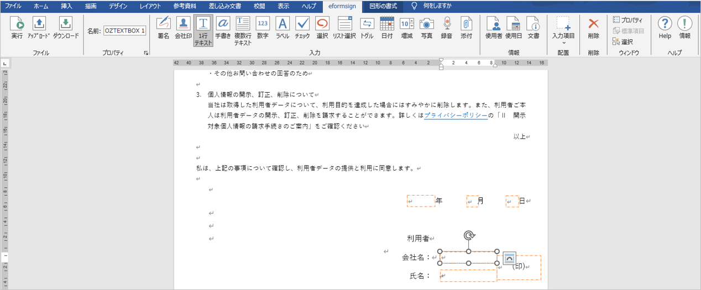
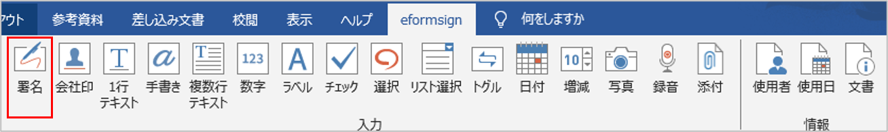
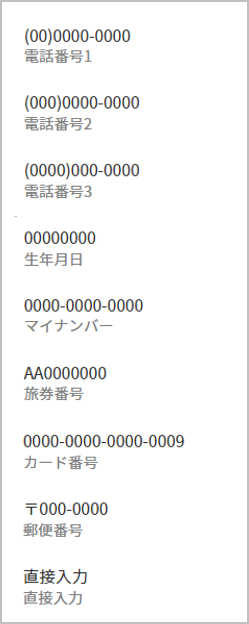
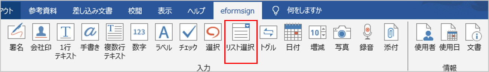
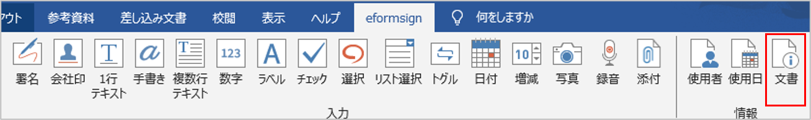

eformsign for Microsoft Officeのご紹介
eformsign for Microsoft Office(Microsoft Officeアドイン)とは、Excel、Word、PowerPointなどのMicrosoft Office製品で作成した文書を、入力機能を備えた電子文書に変換するフォームエディターです。eformsign for Microsoft Officeを使用することで、現在使用中のExcel、Word、PowerPointで作成した文書 (契約書、申込書、同意書、稟議書など) を簡単に電子文書に変換することができます。
eformsign for Microsoft OfficeはExcel、Word、PowerPointなどのMicrosoft Office製品のリボンメニューにアドインとして追加して使用します。電子署名、チェックボックス、テキストボックス、カメラ、録音など、様々な入力機能を備えています。
eformsign for Microsoft Officeを利用して電子文書を作成するプロセスは次の通りです。

eformsign for Microsoft Officeのダウンロード及びインストール手順
eformsignにログイン後、ダッシュボード画面の左上にあるメニューアイコン (
 ) をクリックすると、サイドバーメニューが表示されます。サイドバーメニューの一番下にある eformsign for Microsoft Officeをダウンロード ボタンをクリックします。
) をクリックすると、サイドバーメニューが表示されます。サイドバーメニューの一番下にある eformsign for Microsoft Officeをダウンロード ボタンをクリックします。
eformsignアドインのダウンロードページが表示されます。ページ下部の eformsignアドイン for Microsoft Officeをダウンロード ボタンをクリックします。

ダウンロードしたeformsign for Microsoft Officeの実行ファイルをクリックすると、以下のような使用許諾契約画面が表示されます。eformsignの利用約款とプライバシーポリシーを確認後、 インストールをクリックします。
インストールが完了したら、 完了 ボタンをクリックして、インストール画面を閉じます。
Officeソフト(Word、Excel、PowerPoint) を実行して、eformsign for Microsoft Officeが正しくインストールされていることを確認します。以下のように eformsignと表示されていることを確認します。
メニューの構成
eformsign for Microsoft Officeのインストール後、Excel、 Word、PowerPoint を実行すると、リボンメニューに eformsign タブが追加されていることが確認できます。

① ファイル： 作成した文書を電子フォームとして実行することで、eformsignにテンプレートのアップロード、eformsignからファイルのダウンロードができます。
② プロパティ： 入力項目の名前、項目などのプロパティを設定します。
③ 入力： テンプレートに使用する入力項目を選択します。
④ 情報： テンプレートにメンバーや使用日情報の自動入力を行う、使用者と使用日情報の入力項目を選択します。
⑤ 配置： 入力項目を選択し、任意の箇所、サイズで追加します。 配置は、WordとPowerPointでのみサポートしている機能です。
⑥ 削除： 入力項目を選択し、削除ボタンをクリックすると、入力項目が削除されます。
⑦ ウィンドウ： 入力項目のプロパティタブを開くか、入力項目を選択します。
⑧ ヘルプ： eformsign for Microsoft Officeのバージョンの確認と、最新版がある場合、アップデートを行います。
入力項目の概要
入力項目は、ユーザーが電子文書にコンテンツを入力するための入力欄として機能します。署名、チェック、日付、テキストなど、様々な入力項目があります。各入力項目は、プロパティタブから詳細な設定を行うことができます。
入力項目のタイプ
eformsignでは、以下の入力項目を使用することができます。

入力項目
署名: 署名を入力します。
会社印: 登録されている社印を入力します。
1行テキスト: 1、2文程度の短いテキストを入力します。
複数行テキスト: 複数行の長いテキストを入力します。
手書き: 下書きとなるテキストを入力します。入力した文字をなぞり書きすることができます。
数字: 数字を入力します。
ラベル： 事前に設定した値を文書に表示する場合に使用します。
チェック： チェックボックスを作成し、チェックする項目がある場合に使用します。
選択： 複数の項目から1つを選択します。複数選択も可能です。
リスト選択： クリックすると、ドロップダウンメニューが表示されます。複数項目から1つを選択します。
トグル： 2つ以上の値を入力すると、ボタンをクリックするたびに値が切り替わります。
日付： 特定の日付を入力します。
増減： 増減ボタンをクリックして数字を入力します。
カメラ： カメラを搭載しているデバイス（スマートフォン、タブレットなど）では、カメラで写真を撮るか、アルバムから写真を選択します。カメラのないデバイス（PCなど）では、画像ファイルを選択します。
録音： 録音機能を搭載している端末において、ボタンをクリックして録音します。
添付： ファイル添付機能を追加します。
情報入力項目
入力項目プロパティの確認方法
全ての入力項目は、プロパティタブから詳細設定を行うことができます。プロパティを表示するには、プロパティアイコン、またはプロパティメニューをクリックします。
注釈
全ての入力項目に名前をつける必要があります。 名前は、入力項目を追加する時点で自動的に設定されますが、入力項目への入力内容が一目で分かるような単語に設定することを推奨します。 また、同名の入力項目を複数作成することで、1箇所に入力すると同名の入力項目にも同様の内容が反映されます。 例) 木村、佐々木などの名前を入力する入力項目の名前は 「氏名」 と設定します。
入力項目の追加方法
入力項目を追加する方法には、Excelから追加する方法と、WordやPowerPointから追加する方法があります。WordまたはPowerPointでは、次の2つの方法で入力項目を追加することができます。
Excelから入力項目を追加
Excelを開き、 eformsign リボンメニューに移動します。
入力項目を追加するセルを選択します。

任意の入力項目をクリックします。

入力項目のプロパティから、詳細項目を設定します。
WordまたはPowerPointから入力項目を追加
方法 1：入力項目をクリックして追加する
WordまたはPowerPointファイルを開き、入力項目を追加する箇所を選択します。

eformsign リボンメニューから、追加する入力項目をクリックします。

追加した入力項目のサイズを調整します。

方法 2：入力項目を選択して配置する
WordまたはPowerPointを開き、 eformsign リボンメニューに移動します。
入力項目 アイコンをクリックして、表示されるドロップダウンリストから追加する入力項目を選択します。

任意の位置とサイズで入力項目を追加します。

入力項目の削除方法
削除する入力項目を選択し、 eformsign メニューの 削除（ ）アイコンをクリックします。入力項目を複数選択して削除することもできます。
）アイコンをクリックします。入力項目を複数選択して削除することもできます。
各入力項目のプロパティ設定
Office製品の eformsign リボンメニューでは、チェックボックス、リスト選択、テキスト、署名など、様々な入力項目を使用することができます。
eformsignの全ての入力項目は、共通プロパティと固有プロパティを持ちます。 入力項目プロパティ ウィンドウから、共通プロパティと固有プロパティを表示することができます。共通プロパティには、名前とツールヒントの内容があり、各プロパティの機能は次のとおりです。
名前： 各入力項目を識別するための固有の名前です。ワークフローまたはフィールドの設定ステップで必須入力または修正制限がかかっている場合、入力項目の名前で確認・指定ができます。CSV形式で入力データを出力する場合には、入力項目の名前でどのデータか見分けることができます。
ツールヒントの内容： 受信者が文書を閲覧する際、Windows環境では入力項目にカーソルを合わせるとツールヒントの内容が吹き出し形式で表示されます。モバイル環境では、入力項目がダイアログで実行される際に、ツールヒントの内容がダイアログのタイトルとして表示されます。
注釈
入力項目のプロパティウィンドウは、入力項目が適用された箇所を選択後、eformsignメニューの プロパティ アイコン()をクリックすると表示されます。
注釈
情報タイプの使用者、使用日、文書、ラベルには、ツールヒントの内容がありません。
署名
署名入力項目は、文書への署名依頼をする必要がある場合に使用します。

署名入力項目を追加すると、署名が必要な文書に次のような 署名 ポップアップが表示されます。署名を手書きで描画するか、テキストを入力することで署名を作成することができます。既に登録されている署名がある場合は、その署名を使用することもできます。
入力項目のプロパティ

① 名前
- 署名入力項目の名前を入力します。
例）契約者の署名の場合、入力項目の名前は「契約者の署名」とする)
② 署名タイプ
署名時に使用する署名を選択します。
サイン: 文書の作成者が事前に登録した マイ署名がある場合、署名欄をクリックまたは署名入力ボタンをクリックすることで、登録済みの署名が自動的に入力されます。
イニシャル: マイ署名に登録されたイニシャルがある場合、署名欄をクリックまたはイニシャル入力ボタンをクリックすることで登録済みのイニシャルが自動的に入力されます。
スタンプ: マイ署名に登録されたスタンプがある場合、署名欄をクリックまたはスタンプ入力ボタンをクリックすることで登録済みのスタンプが自動的に入力されます。
直接入力のみ許可: 直接入力のみ許可にチェックを入れると、タブレットPCなどで署名欄に直接サインできるよう設定します。署名欄をクリックすると署名ポップアップが表示され、 手書き、キーボード、モバイル、eformsignアプリ タブから任意の方法で署名を入力します。
注釈
登録された署名、イニシャル、スタンプがある場合、その署名が署名欄に自動的に入力されます。署名、イニシャル、スタンプが登録されていない場合、署名を入力するポップアップが表示されます。 署名タイプを1種類だけ選択した場合、署名欄をクリックするとその署名タイプが表示されます。署名タイプを2種類以上選択した場合、署名欄をクリックすると次のような選択可能な署名タイプボタンが表示されます。

Tip
文書にスタンプ押印
署名ではなく、職印や個人印鑑を使用する場合もあります。eformsignではスタンプ画像を使用して文書の署名欄にスタンプを押すことができます。
① スタンプ画像を使用
スタンプ画像を使用する場合、署名ポップアップで スタンプ タブをクリックし、スタンプの画像を選択後、 確認 ボタンを押します。
② 会社印を使用
会社の法人印鑑など、会社の印鑑がある場合、 会社管理メニューから会社印として登録後、 会社印 入力項目でより安全に、簡単に使用できます。
③ 署名ペンの太さ
署名を手書きで描画するときに表示される線の太さを設定します。
④ 署名ペンの色
署名を手書きで描画するときに表示される線の色を設定します。
Tip
署名日の自動入力設定方法
電子契約書や電子同意書など、署名の入る文書に署名日付が自動的に入力されるように設定できます。
電子書式に変換する文書ファイル（Word、Excel、PowerPoint）を開くか、新規文書を作成します。
署名が必要な箇所に署名入力項目を追加します。
追加した署名入力項目のプロパティタブに入力項目の名前を入力します。 例)署名
署名の日付を入力する箇所に 使用日 入力項目を追加します。
使用日 入力項目のプロパティタブを開きます。

使用日の書式設定を 入力値の変更日とします。
下部に表示される入力項目の名前の入力欄に、署名入力項目の名前である「署名」と入力します。
- ※使用日入力項目の「書式設定」から設定することで、任意の表示形式に変更できます。
例) date-yyyy-MM-dd → date-yyyy年 MM月 dd日
会社印
会社の代表印鑑、社用印鑑、法人印鑑など、 会社管理 > 会社印管理に登録された会社印を入力する際に使用します。 会社印は 会社管理 > 会社印管理に登録された印鑑と使用権限を付与されたメンバーのみ使用できます。会社印に関する履歴は 会社印管理 メニューに記録されます。
入力項目のプロパティ

① 名前
- 会社印入力項目の名前を入力します。
例）法人印鑑の場合、入力項目の名前は「法人印鑑」と設定します。
1行テキストと複数行テキスト
1行テキストの入力項目と複数行テキストの入力項目はどちらも、入力欄を作成する際に使用します。1行テキストは1、 2単語程度の短いテキストに、複数行テキストは2行以上の長いテキストへの使用に適しています。

入力項目のプロパティ
① 名前
- 1行テキスト/複数行テキストの入力項目の名前を入力します。
例)木村、鈴木などが入力される入力項目の名前は「氏名」とします)
② テキストタイプ
テキストタイプをテキスト、パスワード、ユーザー指定から選択します。
プレーンテキスト: 入力規則を持たない一般的なテキストタイプです。
パスワード: 入力したテキストが「*」または「●」の代替文字に置き換えて表示されます。出力するPDF上でも値は代替文字で表示され、CSVデータで出力した場合にのみ値が表示されます。
③ 入力ルール設定
電話番号、生年月日、マイナンバーなどの入力ルールリストから選択するか直接入力からルールを作成することが可能です。
 Tip
入力ルール設定で 直接入力を選択すると、数字、アルファベットなどの入力する文字の種類や文字数などのルールを設定することができます。
例）パスポートの旅券番号の場合 'アルファベット2桁 + 数字7桁' の組み合わせで構成されるので、アルファベットの大文字で始まるように'>LL'、数字だけを入力できる'0'を使用して >LL0000000とルールを設定します。

④ テキストの調整
横幅に合わせて文字数制限: 入力項目の大きさに合わせて文字数を自動的に制限します。短いテキストの場合は項目の大きさを小さく、長いテキストの場合は項目の大きさを大きく設定してください。
文字の大きさを自動調整: 入力項目の大きさに合わせて文字の大きさを自動的に調整します。(文字サイズの縮小)
入力可能な文字数を指定: 入力項目に入力できる最大文字数を設定します。オプション選択時の最大文字数が自動的に設定されます。1行テキストは「1～1000文字」、複数行テキストは「1～8000文字」に設定できます。
⑤ キーパッドタイプ(モバイルにのみ適用)
スマートフォン、タブレットのようなモバイル環境で文書を作成する際、表示されるキーパッドのタイプを選択します。
手書き
手書き入力項目は、予め入力されたテキストをなぞり書きする必要がある場合に使用します。
文書に表示されるテキストを入力しておくと、文書の受信者はテキストをなぞり書きすることができます。


入力項目のプロパティ

① 名前
手書き入力項目の名前を入力します。
② 文字の太さ
なぞり書きする際に表示される線の太さを設定します。
③ 文字の色
なぞり書きする際に表示される線の色を設定します。
④ なぞり書きテキストを維持
手書き入力項目に入力したテキストが背景に表示されるように設定します。
数字
数字入力項目は、金額などの数字を入力する場合に使用します。
入力項目のプロパティ
① 名前
- 数字入力項目の名前を設定します。
例) 決済金額が入力される入力項目の名前は「決済金額」と設定します。
② 負の値の入力許可
本オプションにチェックを入れると、負の値の入力ができるようになります。
③ 入力可能な最小値/最大値
入力可能な最小値/最大値を設定します。
注意
最小値/最大値を設定した場合の注意事項
最小値を設定した場合に入力値が最小値を下回る場合、最小値に置き換えられて入力されます。 最大値を設定した場合に入力値が最大値を上回る場合、最大値に置き換えられて入力されます。
④ 入力可能な小数点桁数
入力可能な小数点の桁数を設定します。小数点の桁数は0～10の間で設定できます。
⑤ 千単位の区分記号の表示
本オプションにチェックを入れると、入力値に自動的に千の単位を区分するコンマが表示されます。
⑥ 接頭辞/接尾辞
- 数字に必要な接頭辞/接尾辞を自動的に入力するよう設定します。
例)「計10,000円」と入力する場合には接頭辞を「計」、接尾辞を「円」と設定します。
ラベル
ラベル入力項目は、別途設定した値を文書に表示する場合に使用します。当該入力欄にテキストを入力すると、文書上に入力したテキストが表示されます。

入力項目のプロパティ
① 名前
ラベル入力項目の名前を設定します。
チェック
チェック 入力項目は、複数項目にチェックを入れる場合に使用します。
Tip
チェック入力項目と選択入力項目の違い
チェック 入力項目は 選択 入力項目と似ていますが、異なる入力項目です。 チェック 入力項目は複数の項目を選択することができますが、 選択 入力項目は複数項目のうち1つだけ選択する場合に使用します。

チェック入力項目の入力値は、データをダウンロードすると次のように表示されます。
項目にチェックが入っている場合: true
項目にチェックが入っていない場合: false
Word、PowerPointでは、チェック入力項目が長方形の図形で表示されます。 各項目の内容は、入力項目の図形内に入力する必要があります。
入力項目のプロパティ

① 名前
チェック入力項目は、チェック項目ごとに異なる名前をつける必要があります。複数のチェック入力項目に同名に設定された場合、同名の入力項目のうち最後尾の入力値のみ表示されます。
② 選択スタイル
チェック入力項目はプロパティからスタイルを設定できます。チェックを選択した場合、チェックボックスがデフォルト設定となります。これ以外にもラジオ、丸囲みを表示するよう設定できます。
以下は、チェック/ラジオ/丸囲みを選択した場合の、各チェックボックスの表示例です。

③ 非選択スタイル
選択されていない項目に表示されるスタイルを指定することができます。チェックボックスは四角形、ラジオボタンは円形、丸囲みは何も表示されません。
④ チェックボックスの位置
チェックボックスの位置を指定します。
テキストの左側: チェックボックスの位置をテキストの左側に設定します。
テキストの右側: チェックボックスの位置をテキストの右側に設定します。
選択
選択入力項目は、複数の項目のうち、1つだけ選択する場合に使用します。CSVデータでダウンロードすると、選択入力項目の選択値は選択した項目の名前が表示されます。

Word、PowerPoint では、選択入力項目が長方形で表示されます。 入力項目の内容は、入力項目の図形内に入力する必要があります。
入力項目のプロパティ

① 名前
選択入力項目内の選択項目には、各選択グループ内で同名に統一する必要があります。
例）問題1に1、2、3、4、5の選択肢がある場合、1、2、3、4、5の項目を同名で「問題1」と設定します。問題2に1、2、3、4、5の選択肢がある場合、名前を「問題2」とします。
以下の例では、全ての選択項目の 名前を「年齢の選択」としています。

② 選択スタイル
選択入力項目は、プロパティでスタイルを設定できます。赤い丸囲みの「円」がデフォルトで設定されています。他にもチェックボックスとラジオボタン表示を選択できます。
③ 非選択スタイル
選択されていない項目に表示されるスタイルを指定することができます。
④ マルチ選択の可能
マルチ選択の可能にチェックを入れると、複数の項目を選択できます。複数の項目が選択されている場合、データを保存する際に、選択した複数の項目がコンマ（ , ）で区切られて保存されます。
⑤ 未選択可能
未選択可能にチェックを入れると、選択した項目をもう一度クリックすることで選択解除できるようになります。
⑥ ラジオボタンの位置
ラジオボタンの位置を指定します。
テキストの左側: ラジオボタンの位置をテキストの左側に設定します。
テキストの右側: ラジオボタンの位置をテキストの右側に設定します。
リスト選択
複数の項目から1つの項目を選択する必要がある場合に、リスト選択入力項目を使用します。

次のようなチェックボックスをクリックすると、項目のリストが表示されます。

入力項目のプロパティ
① 名前
- リスト選択入力項目の名前を入力します。
例) お気に入りの色を選択する入力項目の名前は「お気に入りの色」とします。
② リスト表示項目
選択肢の項目を入力します。各項目はEnterキーで区切ります。
注釈
リスト選択入力項目に「選択してください」と表示するには、リスト表示項目の項目に「選択してください」と設定します。
③ 入力データのリセット可能
入力データのリセット可能にチェックを入れると、選択済みの項目を選択解除できるようになります。入力データのリセットは、次のように行います。
PC 環境：入力項目を右クリックして表示されるポップアップメニューから「入力データをリセット可能」を選択します。
モバイル環境：「ごみ箱」アイコンをクリックします。
トグル
ONやOFFなど、特定の状態を示すために使用します。トグル入力項目を使用すると、入力項目をクリックするたびに、予め設定しておいた項目の順番で入力値が切り替わります。

次のような入力項目をクリックすることで、 良好 、 不良 を切り替えることができます。

入力項目のプロパティ

① 名前
- トグル入力項目の名前を入力します。
例) 最初の点検項目に対する入力項目の場合、「点検項目1」とします
② リスト表示項目
トグル入力項目をクリックするたびに、切り替わる項目のリストを入力します。複数の項目を入力する場合、Enterキーで区切ります。
③ 入力データのリセット可能
入力データのリセット可能にチェックを入れると、入力した項目を削除できるようになります。トグル入力項目は一度選択すると、別の項目に変更はできますが、項目の選択を解除することはできません。入力データをリセット可能にチェックを入れた場合のみ、何も入力していない状態に変更できます。
PC環境：入力項目を右クリックして表示されるポップアップメニューから 入力データをリセット可能を選択します。
モバイル環境：ごみ箱アイコンをクリックします。
日付
日付を入力する必要がある場合に使用します。入力欄をクリックすると日付ピッカーが表示され、任意の日付を選択できます。

入力項目のプロパティ

① 名前
- 日付入力項目の名前を入力します。
例) 休暇の開始日を選択する入力項目の名前は「休暇の開始日」とします
② 書式設定
日付を表示する形式を指定します。
yyyy: 年度を表示します。（yyyy年＝2020年）
MM: 月を表示します。大文字で入力します。（MM月＝08月）
dd: 日 を表示します。(dd日 = 10日)
「2020年 2月 5日」のように表示するには、書式設定に「yyyy年 M月 d日」と入力します。
③ 入力可能な最小/最大日付
日付の選択時に選択可能な最小日付と最大日付を指定して、入力可能な日付の範囲を設定します。
④ 空の値の場合、今日の日付を表示
文書を開いた際に、今日の日付が自動的に入力されるように設定します。日付入力項目を追加すると、デフォルトでチェックが入ります。今日の日付が入力されている入力欄をもう一度クリックすると、別の日付を選択することができます。
⑤ 入力データのリセット可能
入力データのリセット可能にチェックを入れると、選択した日付を削除できるようになります。日付入力項目は一度選択しても別の日付に変更できますが、日付の選択を解除することはできません。入力データのリセット可能にチェックを入れた場合のみ、何も選択されていない状態に変更できます。また、何も選択されていない場合に 空の値の場合、今日の日付を表示にチェックが入っている場合は、今日の日付が選択されます。
PC環境：入力項目を右クリックして表示されるポップアップメニューから「入力データのリセット可能」を選択します。
モバイル環境：ごみ箱アイコンをクリックします。
⑥ ツールヒントの内容
ツールヒントの内容に入力された説明は、入力欄にカーソルを合わせた際に表示されます。
増減
増減ボタンを押して数字を入力する際に使用します。入力欄をクリックすると、2つの矢印が表示され、上下矢印を押すことで数字の増減ができます。 PCのキーボード環境では、入力欄に任意の数字を直接入力できます。スマートフォンやタブレット環境では、入力範囲の数字リストをスクロールすることで任意の数字を選択できます。

入力項目のプロパティ

① 名前
- 増減入力項目の名前を入力します。
例) 予約人数を入力する入力項目の名前は、「予約人数」とします。
② 変化の増分
- 入力欄の増加/減少のアイコンをクリックするたびに、現在入力されている値から増減する値を入力します。
例) 変化の増分を100に設定して文書を作成した場合、入力欄の右側にある上への矢印（▲）をクリックすると、入力値は200、300...と増加します
③ 入力可能な最小値/最大値
- 入力可能な最小値と最大値を指定して、入力可能な数字の範囲を設定します。
例) 生年月日の場合は、現在の年度の最小値を1900、最大値を現在の年度、増分の単位を1に指定します。最小値または最大値が指定されている状態で範囲外の数字を入力すると、最小値/最大値が自動で入力されます。最大値が100の場合、入力欄に 101を入力すると、数字が自動的に最大値の100に変更されます。
④ 入力データのリセット可能
入力データのリセット可能にチェックを入れると、入力した数字を削除できるようになります。数字入力項目は一度数字を入力すると別の数字に変更はできますが、数字を削除することはできません。入力データのリセット可能にチェックを入れることで、何も入力されていない状態に変更できます。
PC環境：入力項目を右クリックして表示されるポップアップメニューから、 入力データのリセット可能を選択します。
モバイル環境：ごみ箱アイコンをクリックします。
写真
スマートフォンやタブレットなどのカメラを搭載したデバイスで写真を撮り、文書にアップロードする際に使用します。カメラのないPC環境では、入力項目をクリックすると画像ファイルを選択するウィンドウが表示されます。

選択した画像のサイズが入力欄のサイズより大きい場合、入力欄内に入るサイズに縮小してアップロードされます。
注釈
写真入力項目の場合、カメラを利用できる環境ではカメラ機能が実行され、カメラの利用できない環境では画像ファイルの選択ウィンドウが実行されます。

入力項目のプロパティ
① 名前
- 写真入力項目の名前を入力します。
例) IDカードの写真を撮影する入力項目の名前は「身分証明用写真」とします
② ツールヒントの内容
ツールヒントの内容に入力された説明は、入力欄にカーソルを合わせた際に表示されます。
録音
ユーザーの録音データを文書に保存する場合に使用します。 最大録音時間の設定、録音済みの音声を聴けるように設定することもできます。
録音入力項目を追加することで、以下のようにビューアーから録音したコンテンツの再生、新規録音を行うことができます。

注釈
録音のタイムアウトが1以上に設定されている場合、設定した時間（単位：秒）の分だけ録音後、自動で録音が完了します。
ActiveXビューアーでは、Windows8以降から録音の再生UIをサポートしています。
録音入力項目をPC環境で実行する場合、ボイスレコーダーを利用できる場合にのみ機能します。
入力項目のプロパティ

① 名前
- 録音入力項目の名前を入力します。
例) 録音を再生する入力項目の名前は「録音」と設定します
② ツールヒントの内容
ツールヒントの内容に入力された説明は、入力欄にカーソルを合わせた際に表示されます。
添付
文書にファイルを添付する場合に使用します。添付入力項目を使用して文書を添付すると、添付したファイルは元の文書の最後に新規ページとして追加されます。

添付可能なファイルの種類とサイズは次の通りです。
ファイルの種類: PDF、JPG、PNG、GIF
ファイルのサイズ: 最大5MB
入力項目のプロパティ

① 名前
- 添付入力項目の名前を入力します。
例) 在職証明書を添付する入力項目の名前は「在職証明書」とします。
② ツールヒントの内容
ツールヒントの内容に入力された説明は、入力欄にカーソルを合わせた際に表示されます。
使用者
文書を作成または変更したメンバーの情報を、文書に自動的に入力する場合に使用します。設定によって、名前、連絡先などのメンバーの基本情報またはカスタムフィールド情報が使用者入力項目に自動的に入力されます。

入力項目のプロパティ

① 名前
- 使用者入力項目の名前を入力します。
例) 文書を作成したメンバーの名前を表示する入力項目の名前は「作成者名」とします。
② 使用者表示タイプ
作成者: 最初に文書を作成したメンバーの情報を表示します。
アクセス者: 文書を最後に閲覧または変更したメンバーの情報を表示します。
入力値の修正者: 特定の入力項目に内容を入力したメンバーの情報を表示します。
入力値の修正者を選択すると、入力項目の入力欄が次のように表示されます。連携する入力項目の名前はここに入力します。

注釈
署名者名の自動入力の設定方法
担当者の署名欄に署名した担当者の名前を自動的に入力するには、まず担当者の署名欄に署名入力項目を配置後、署名入力項目の名前を「担当者の署名」とします。次に、担当者の名前を入力する使用者入力項目をもう一つ作成します。使用者入力項目の使用者表示タイプの項目として 入力値の修正者を選択し、入力項目の名前の入力欄に「担当者の署名」と入力します。
③ ユーザーの表示情報
メンバーの情報の中から、表示するメンバーの情報を選択します。メンバーの基本情報、またはカスタムフィールドに入力した追加情報のうち、任意の情報を選択します。
メンバー基本情報タイプ：名前、ID、部門、役職、携帯電話、固定電話
注釈
メンバーの基本情報の修正方法
メンバーの基本情報を変更するには、 代表管理者 または 会社管理 権限が必要です。
会社管理 > メンバー管理 メニューに移動します。
メンバーリストからメンバーを選択します。
画面の右側に表示される詳細情報を修正します。
保存 ボタンをクリックし、変更を保存します。
使用日
文書が作成または変更された日付を、文書に自動的に入力する場合に使用します。設定によって、文書を作成した日付、文書にアクセスした日付、または特定の入力項目を入力した日付が自動的に入力されます。

入力項目のプロパティ
① 名前
- 使用日入力項目の名前を入力します。
例) 文書に署名した日付を表示する入力項目の名前は「署名日」とします
② 書式設定
日付を表示する書式を指定します。
yyyy: 年度を表示します。（yyyy年→2023年、ggge→令和5年）
MM: 月を表示します。大文字で入力します。（MM月→08月、M月→8月 ）
dd: 日を表示します。（dd日→09日、d日→9日）
「2023年 08月 09日」のように表示するには、書式設定に「yyyy年 MM月 dd日」と入力します。
③ 使用日表示タイプ
作成日付: 文書を最初に作成した日付が表示されます。
アクセス日付: 文書を修正または閲覧した最新の日付が表示されます。
入力値の修正日付: 特定の入力項目に内容を入力した日付が表示されます。
「入力値の修正日付」を選択すると、入力項目の入力欄が次のように表示されます。連携する入力項目の名前をここに入力します。

注釈
契約者の署名日を自動的に入力するには、まず契約書の署名欄に署名入力項目を配置後、署名入力項目の名前を「契約者の署名」とします。 署名日を入力する使用日入力項目をもう1つ作成します。使用日入力項目の使用日の表示タイプのプロパティで「入力値の変更日」を選択し、入力項目の名前の入力欄に「契約者の署名」と入力します。
文書
文書入力項目は、文書内に文書関連の情報を入力する必要がある場合に使用します。文書IDか文書番号のいずれかを選択後、任意の情報を入力します。

文書IDはシステムが付与する文書固有のIDであるため、設定を必要としません。文書番号に関する設定は、テンプレートをアップロード後、 テンプレート設定 > 全般から行えます。
入力項目のプロパティ

① 名前
- 文書入力項目の名前を入力します。
例) 文書番号を入力する場合、入力項目の名前は「文書番号」とします
② 文書情報のタイプ
使用する文書情報を選択します。
文書ID: システムがすべての文書に付与する文書固有のIDです。 32桁の英数字の組み合わせで表示されます。 例) 0077af27a98846c8872f5333920679b7
文書番号: テンプレート設定 > 全般で設定した文書番号です。文書番号の設定については 文書番号の自動生成をご参照ください。
フォームファイルのアップロード
Office製品から文書に入力項目を追加し、編集が完了したファイルは次の手順でアップロードします。
リボンメニューのファイルグループにある 実行(
 )アイコンをクリックすると、次のようなログインポップアップ画面が表示されます。
)アイコンをクリックすると、次のようなログインポップアップ画面が表示されます。
ログインすると、電子文書形式に変換された文書のプレビューが表示されます。
プレビュー画面で フォームファイルのアップロードをクリックするか、リボンメニューの アップロード(
 ) アイコンをクリックすることで、テンプレートの一覧と テンプレートの新規作成 ができる画面が表示されます。
) アイコンをクリックすることで、テンプレートの一覧と テンプレートの新規作成 ができる画面が表示されます。
4. テンプレートの新規作成 をクリックすると、先ほどアップロードした文書のテンプレート設定画面が表示されます。 左側の設定タブから当該テンプレートに関する追加設定を完了後、右上の 保存 ボタンをクリックすることでテンプレートを保存及び生成します。

{kind=link}
{kind=link}
{kind=link}
{kind=link}
{kind=link}
{kind=link}
{kind=link}
{kind=link}
{kind=link}
アップロードしたテンプレートを追加設定する
テンプレートをeformsignにアップロード後は、テンプレートで作成した文書について、テンプレートのタイトル、文書番号、ワークフローなどの追加設定を行うことができます。
eformsign にログイン後、 テンプレート管理 メニューに移動します。
テンプレート設定 アイコンをクリックし、テンプレート設定画面に移動します。
全般： テンプレート名、テンプレートの略称、文書タイトルの自動生成ルール、文書番号などを設定します。
権限の設定: テンプレートを使って文書を作成するメンバー/グループ、テンプレートを修正できるメンバーを指定します。
ワークフローの設定: 文書の作成から完了までの、文書の処理ステップを設定します。
フィールドの設定: フィールドの表示有無、順序、デフォルト値、自動入力値などを設定します。
通知の設定: テンプレートから作成した文書に対するステータス通知の受信者を設定し、最終完了通知メッセージを編集します。
全ての設定を完了後、 保存 ボタンをクリックすることでテンプレートを配布します。
重要
テンプレートの配布とは？
作成したテンプレートで文書を作成できるようにするには、 テンプレートを保存後に配布する必要があります。 テンプレートをメンバーが使用できるように公開することができます。
テンプレートを配布せず保存のみ行った場合、保存したテンプレートはテンプレートの使用権限を持つメンバーの テンプレートで作成する > テンプレート一覧画面に表示されません。
配布されていないテンプレートは以下の画像のようにテンプレートに 配布前と表示されます。テンプレートを配布するにはテンプレートの三点メニューから配布をクリックするか、テンプレートの設定から保存ボタンをクリックして配布して配布の有無を選択することができます。

✅ テンプレートの配布については テンプレートの配布をご参照ください。
注釈
テンプレートの詳細な説明については、eformsign for Microsoft Officeのご紹介をご参照ください。